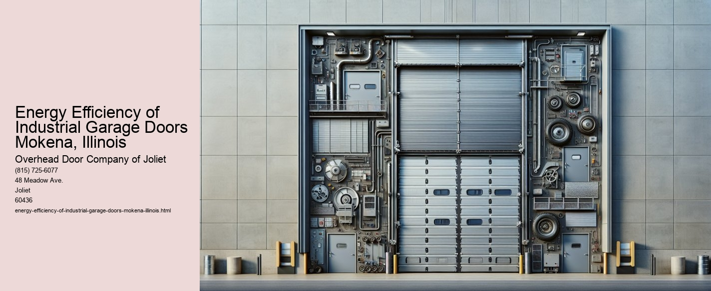

Energy Efficiency of Industrial Garage Doors in Mokena, Illinois
In recent years, the emphasis on energy efficiency has permeated various sectors, with the industrial sector being no exception. Industrial garage doors, often overlooked, play a critical role in the energy dynamics of facilities in Mokena, Illinois. As industries in this region strive to optimize operations and reduce overhead costs, the energy efficiency of garage doors has emerged as a pivotal factor.
Industrial garage doors serve multiple functions beyond simply allowing ingress and egress. They are integral to maintaining indoor climate control, ensuring security, and facilitating the smooth flow of operations. Given the often harsh climate conditions in Mokena, characterized by cold winters and warm summers, the energy efficiency of these doors becomes even more crucial.
One of the primary benefits of energy-efficient industrial garage doors is their contribution to reducing heating and cooling costs.
Moreover, energy-efficient garage doors can significantly contribute to the sustainability goals of industries. By minimizing energy wastage, they help reduce the carbon footprint of industrial operations. This aspect is particularly important in Mokena, where local regulations and community expectations are increasingly focused on environmental stewardship. By adopting energy-efficient solutions, industries not only comply with regulations but also demonstrate their commitment to sustainable practices, which can enhance their reputation and competitiveness.
Advancements in technology have further enhanced the energy efficiency of industrial garage doors. Modern doors are equipped with features such as advanced sealing systems, high-performance insulation, and automated controls that allow for precise operation. Automated systems can optimize the opening and closing of doors based on specific needs, minimizing the time doors remain open and consequently reducing energy loss. Additionally, integrating smart technology enables facility managers to monitor and control garage doors remotely, ensuring optimal energy use at all times.
However, the transition to energy-efficient garage doors requires an initial investment, which can be a deterrent for some businesses. It is essential to consider this investment as a long-term cost-saving measure. The reduction in energy bills and potential tax incentives for energy-efficient upgrades can offset the upfront costs over time. Furthermore, the increased durability and reduced maintenance needs of these doors can decrease operational disruptions and associated expenses.
In conclusion, the energy efficiency of industrial garage doors is a critical consideration for businesses in Mokena, Illinois. As industries face growing pressure to optimize energy use and reduce environmental impact, investing in energy-efficient garage doors offers a practical solution.
Types of Industrial Garage Doors Joliet, Illinois